A ZHAARQ analisa a situação do seu imóvel e conduz as etapas técnicas e documentais necessárias para buscar sua regularização.
Você não precisa saber qual documento está faltando. Conte o que aconteceu com o imóvel e a equipe orienta os próximos passos.
Projetos • Prefeitura • Habite-se • CND • Averbação
+100 Projetos e Processos
Domínio técnico e legal em cada etapa
Atendimento
Orientação pelo WhatsApp
Análise
Cada imóvel é avaliado individualmente
Condução
Técnica e documental
Veja algumas das situações mais comuns entre proprietários que precisam regularizar um imóvel.
A obra ficou diferente da documentação original e nunca foi atualizada nos registros da Prefeitura.
A construção atual existente não é igual ao projeto aprovado arquivado no cartório.
E o comprador ou banco identificou uma pendência na documentação que travou a negociação.
Mas não sei exatamente quais plantas, laudos ou procedimentos técnicos preciso protocolar.
A casa está construída há anos, mas não sei quais etapas cumprir para obter o Certificado de Conclusão.
A área construída não está registrada na matrícula do Cartório de Registro de Imóveis (consta apenas terreno).
Cada imóvel possui particularidades. O primeiro passo é entender o seu caso antes de qualquer gasto desnecessário.
Pendências documentais ou construtivas costumam travar planos patrimoniais no momento mais inoportuno:
O comprador exige certidões negativas e o imóvel travado perde a oportunidade de mercado.
O banco não aprova crédito nem aceita como garantia um imóvel com divergência de área na matrícula.
A documentação precisa ser atualizada perante cartórios e órgãos públicos para permitir a transferência.
A construção não possui existência legal perante o Cartório de Registro de Imóveis.
Por isso, o primeiro passo não é tentar descobrir sozinho qual documento falta. É entender a situação do imóvel.
A ZHAARQ atua nas etapas necessárias de acordo com a situação de cada imóvel:
Levantamento físico no local ("as built") e adequações técnicas necessárias.
Aprovação, atendimento a comunique-se e procedimentos legais municipais.
Solicitação do Certificado de Conclusão de Obra, quando aplicável.
Regularização e certidão negativa junto à Receita Federal, quando aplicável.
Atualização definitiva da construção no Cartório de Registro de Imóveis (RGI).
Arquitetura + Processos Legais
Experiência comprovada em diferentes situações de imóveis, projetos arquitetônicos e processos de regularização perante Prefeituras e Cartórios.
Cada imóvel tem uma história. Cada caso precisa de uma análise.
Galeria com fachadas reais de imóveis atendidos pela ZHAARQ. Clique para ampliar.
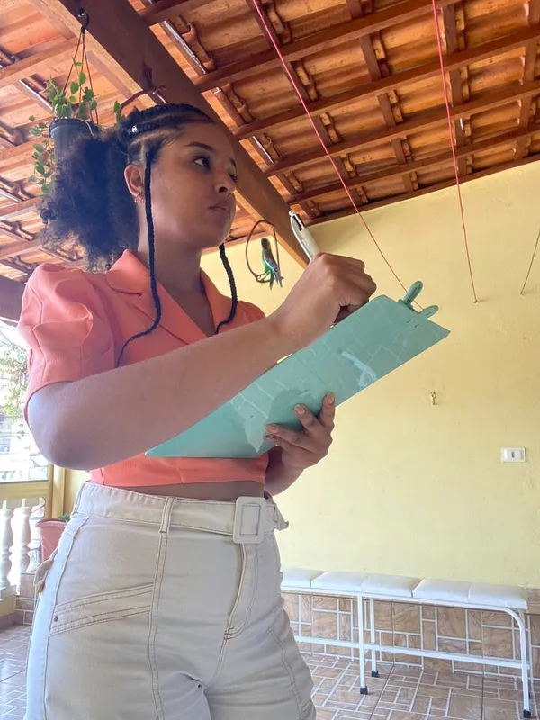
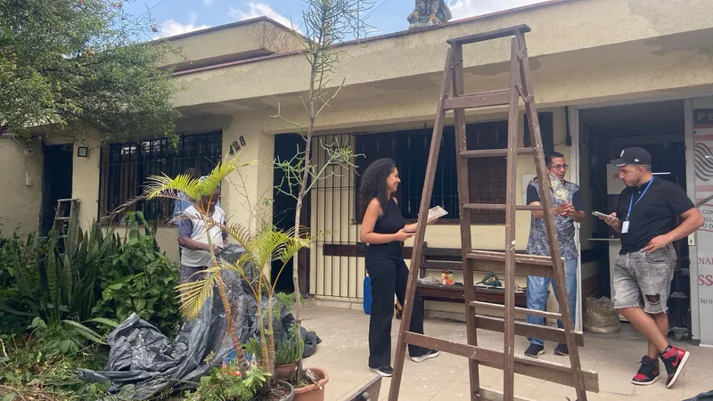
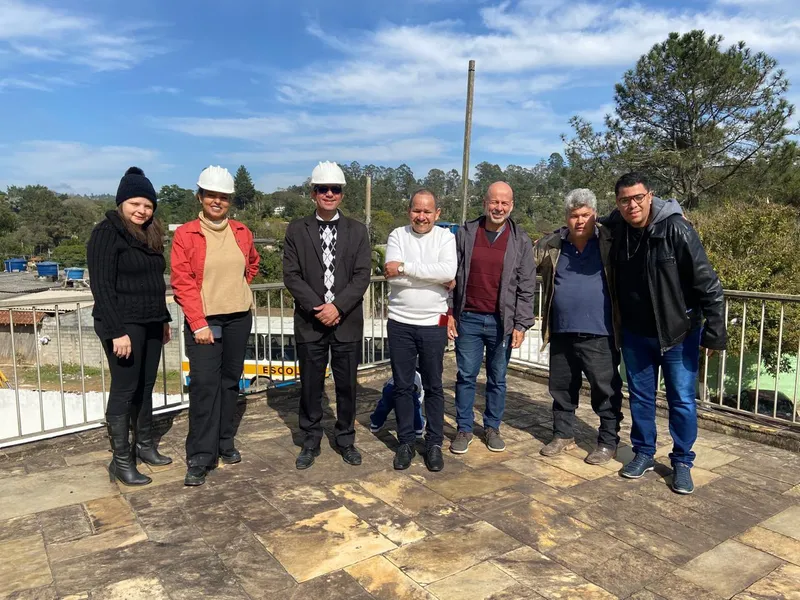
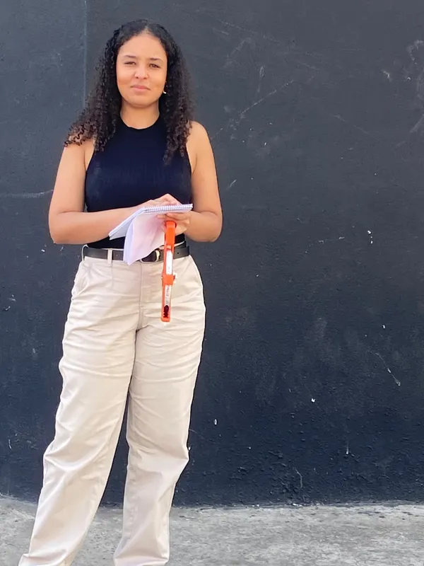
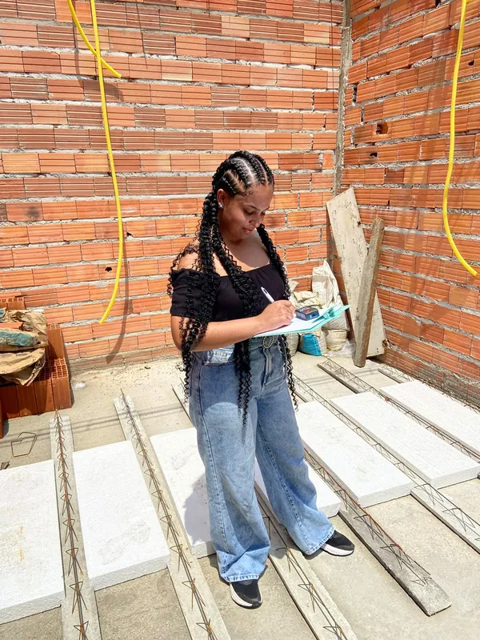
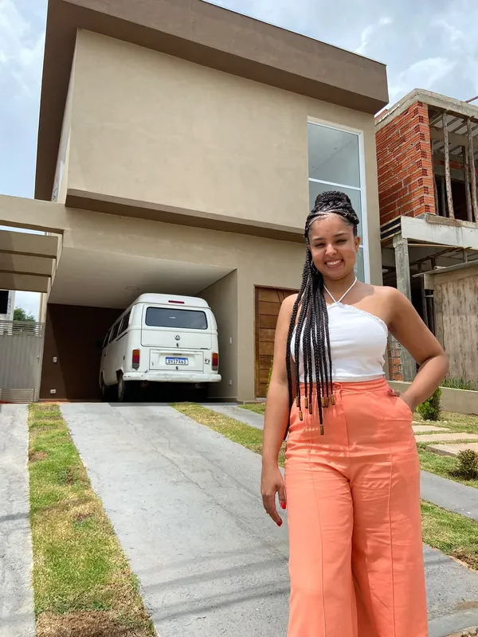
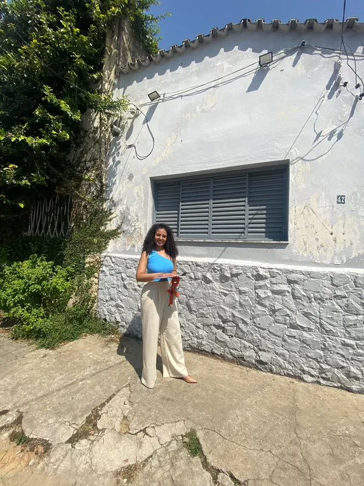
Um fluxo transparente para que você tenha total clareza dos próximos passos:
Você explica brevemente a situação do imóvel pelo WhatsApp.
Entendemos os documentos, fotos e a situação existente no local.
Identificamos quais etapas técnicas e legais podem ser necessárias.
A ZHAARQ acompanha as etapas técnicas e documentais contratadas.
Um exemplo de como diferentes etapas podem fazer parte de um processo completo de regularização:
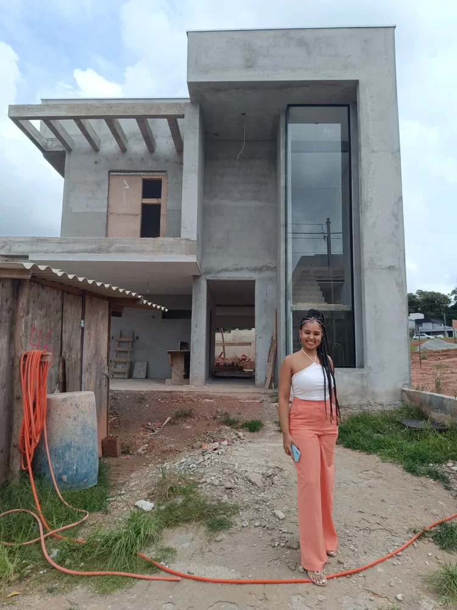
Em ObrasExecução dentro dos recuos e parâmetros exigidos pelo plano diretor.
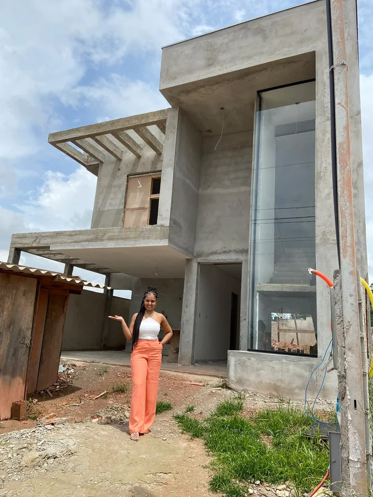
AcompanhamentoAcompanhamento para garantir conformidade antes da vistoria municipal.
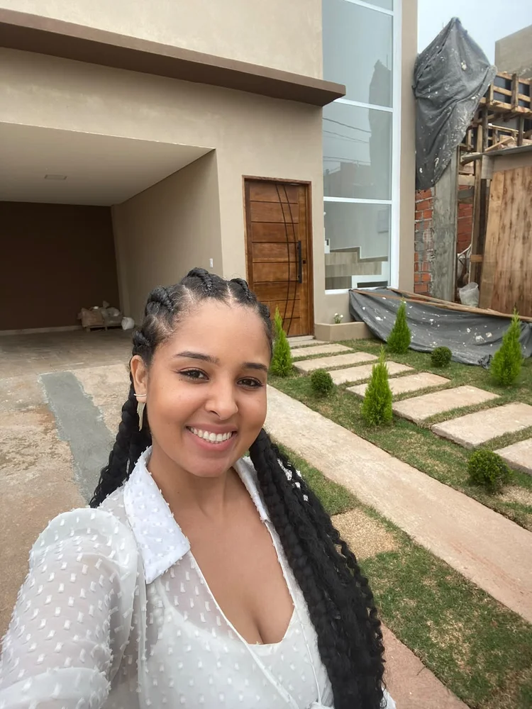
Obra ConcluídaImóvel acabado e apto para a emissão do Habite-se pelo município.
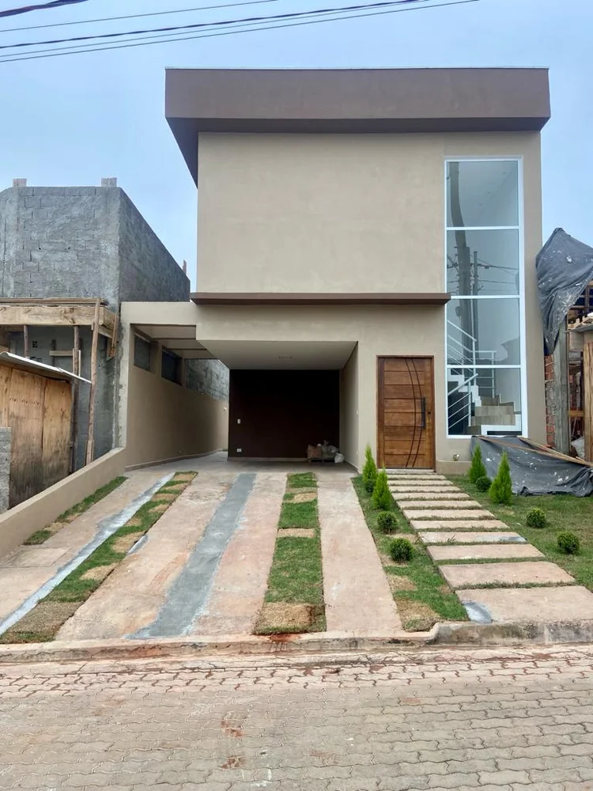
AverbadaCertidão Negativa de Débitos e registro definitivo na matrícula do RGI.
Tudo bem. Você não precisa saber.
Muitas pessoas chegam até a ZHAARQ justamente porque descobriram uma pendência e não sabem qual documento, projeto ou procedimento precisam realizar.
A análise inicial existe justamente para entender a situação do imóvel e orientar com clareza.
A ZHAARQ Arquitetura nasceu com o propósito de unir o rigor técnico do projeto arquitetônico à segurança jurídica da regularização de imóveis. Entendemos que regularizar não é preencher formulários: é proteger o patrimônio que muitas vezes levou uma vida para ser construído.
Atuamos perante Prefeituras, Receita Federal e Cartórios de Registro de Imóveis, garantindo que você tenha clareza de prazos, custos e possibilidades legais para o seu caso.
Registro CAU
Conselho de Arquitetura e Urbanismo
São Paulo & Região
Atendimento técnico presencial e digital
Respostas transparentes para as perguntas mais comuns:
Conte para a ZHAARQ o que está acontecendo e descubra quais podem ser os próximos passos para buscar a regularização do seu imóvel.
Conversa direta e confidencial • Análise inicial sem compromisso
Precisa de análise?
Fale com um especialista